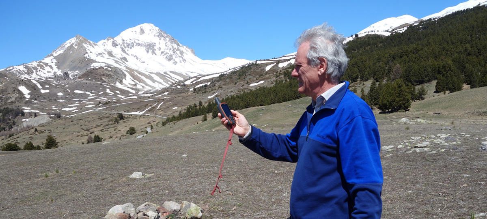

<!--
  Generated template for the AddHikingPage page.

  See http://ionicframework.com/docs/components/#navigation for more info on
  Ionic pages and navigation.
-->
<ion-header>

  <ion-navbar>
    <ion-title>AddHiking</ion-title>
  </ion-navbar>

</ion-header>


<ion-content padding>
    <ion-row>
      <ion-col col-6 offset-3>
        <div class="location_div"> </div>
      </ion-col>
    </ion-row>
  <form [formGroup]="addHikingForm">
    <ion-row>
  <ion-col col-6 offset-3>
    <ion-item>
      <ion-label floating>Nom</ion-label>
      <ion-input [formControl]="addHikingForm.controls['nom']"
          type="text"></ion-input>
    </ion-item>
  </ion-col>
  </ion-row>

  
  <ion-row>
    <ion-col col-6 offset-3>
      <ion-item>
        <ion-label floating>Description</ion-label>
        <ion-input [formControl]="addHikingForm.controls['description']"
            type="text"></ion-input>
      </ion-item>
    </ion-col>
  </ion-row>
  

    <ion-row>
    <ion-col col-3 offset-3>
    <ion-item>
      <ion-label floating>Ville</ion-label>
      <ion-input [formControl]="addHikingForm.controls['lieu']"
          type="text"></ion-input>
    </ion-item>
  </ion-col>
  <ion-col col-3>
    <ion-item>
      <ion-label floating>Durée</ion-label>
      <ion-datetime displayFormat="HH:mm" [formControl]="addHikingForm.controls['duree']"></ion-datetime>
    </ion-item>   
  </ion-col>
</ion-row>

    <ion-row>
        <ion-col col-3 offset-3>
            <ion-item>
                <ion-label floating>Dénivellé</ion-label>
                <ion-input [formControl]="addHikingForm.controls['denivelle']"
                    type="number"></ion-input>
              </ion-item>
        </ion-col>
        <ion-col col-3>
        <ion-item>
            <ion-label floating>Note</ion-label>
            <ion-input [formControl]="addHikingForm.controls['note']"
                type="number" min=0 max=5></ion-input>
          </ion-item> 
        </ion-col>

        <ion-row>
          <ion-col col-6 offset-3>
            <div formArrayName="steps">
              <section [formGroupName]="i"
              *ngFor=" let step of form.controls.steps.controls; let i = index">
              <ion-col col-6>
                  <ion-item>
                      <ion-label floating>LONGITUDE Etape n°{{ i + 1}}</ion-label>
                      <ion-input [formControl]="longitude"></ion-input>
                    </ion-item>
              </ion-col>
<ion-col col-6>
    <ion-item>
        <ion-label floating>LATITUDE Etape n°{{ i + 1}}</ion-label>
        <ion-input [formControl]="latitude"></ion-input>
      </ion-item> 
</ion-col>
            </section>
            </div>
          </ion-col>
        </ion-row>
        <ion-row>
          <ion-col col-6 offset-3>
              <span
              ion-button
              float-left
              icon-left
              clear
              (click)="addNewInputField()">
                 <ion-icon name="add"></ion-icon>
                 Add a new step
           </span>
          </ion-col>
        </ion-row>
  </ion-row>
    <ion-row>
      <ion-col col-6 offset-3 text-center>
        <button ion-button block color="secondary" (click)="addHiking()">
          Ajouter une rando
        </button>
      </ion-col>
    </ion-row>
  
  </form>
</ion-content>
